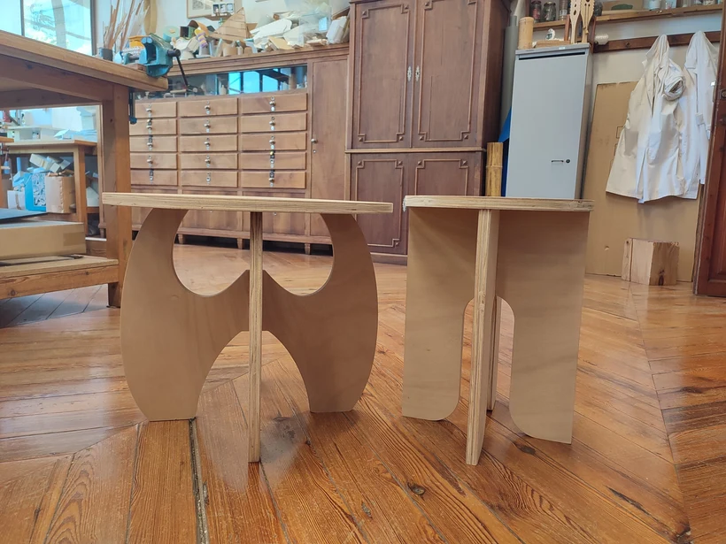
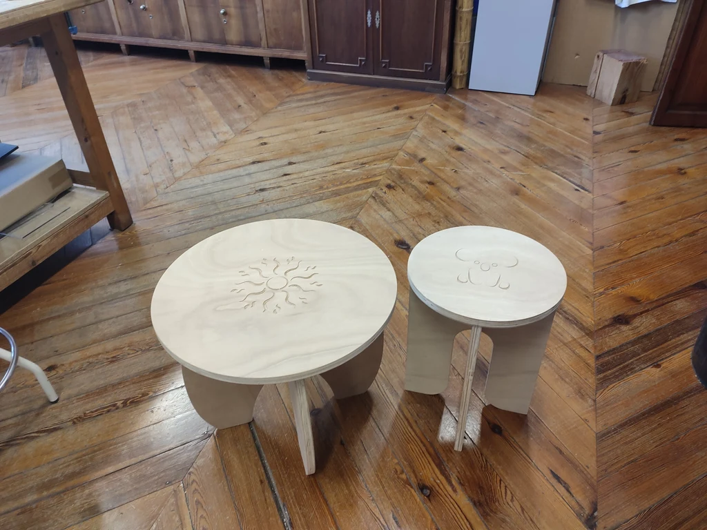

Diseño de producto
Mesita
Diseño de una mesita auxiliar, desde el modelado en Rhinoceros 7 hasta la preparación para fabricación CNC en Fusion 360. El ejercicio trabaja ensamblajes, proporciones y trayectorias de herramienta para el mecanizado.
Rhinoceros 7 · Fusion 360 · CNC




